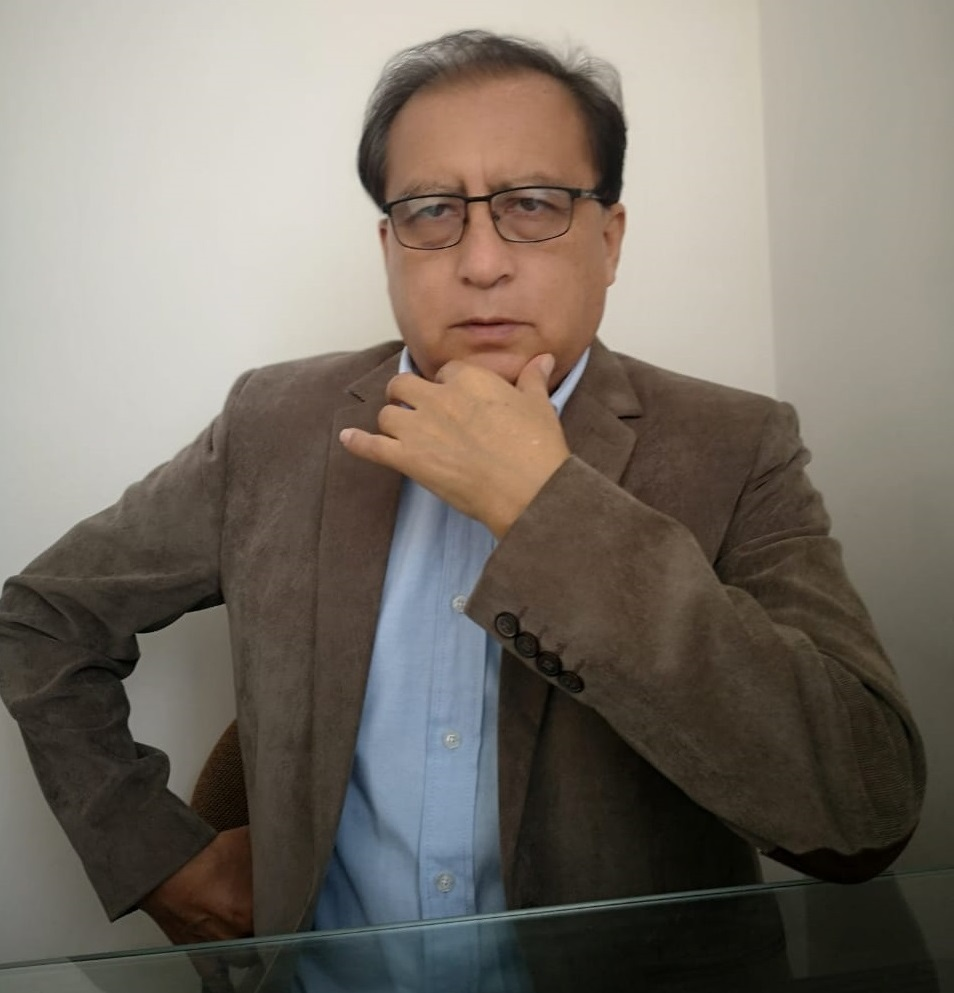

Jorge Teófilo Chávez Estrada
Nacido en el distrito de San Francisco de Asís – Huarín – Lauricocha.
Domicilio: Jr. Aguilar N° 178. Huánuco – Huánuco.
Trabaja: Universidad Nacional Hermilio Valdizán – Huánuco.

Estudios:
Bachiller en Ingeniería Industrial - UNHEVAL.
Técnico Electricista – ISTAP
Título Profesional en Ingeniería Industrial - UNHEVAL
Maestría en Gestión de Proyectos de Inversión – EPG UNHEVAL
Maestría en Gestión de Proyectos Sociales – EPG UNMSM.
Doctorado en Ingeniería – EPG UNFV.
Post-Doctorado INNOVA CIENTIFIC - UNHEVAL
Experiencia Académica:
Profesor Asociado de la Facultad de Ingeniería Industrial y de Sistemas (FIIS) de la Universidad
Nacional Hermilio Valdizán de Huánuco Perú (UNHEVAL).
Maestro en Gestión Proyectos - UNHEVAL.
Maestría en Proyectos Sociales – UNMSM.
Doctorado en Ingeniería - UNFV.
Pos-Doctorado UNHEVAL
Experiencia profesional:
Jefe de cómputo y soporte informático – COPISA.
Jefe de la Oficina de Proyectos de Inversión Pública (OPI) – UNHEVAL
Supervisor de FONCODES – Programa de Desayunos Escolares.
Supervisor de Comunicaciones - Hospital Regional Hermilio Valdizán Nivel III-1 Huánuco.
Profesor de Computación e Informática – ISTEN – Tingo María.
Profesor Computación e Informática – ISPMDM – Huánuco.
Profesor Computación e Informática SISTEC – Huánuco
Profesor Computación e Informática ISTIC – Huánuco
Docente de Ciencias Básicas y Computación – UNAS – Tingo María.
Docente de Ingeniería de Sistemas UDH – Huánuco.
Docente de Ingeniería de Sistemas – FIIS – UNHEVAL – Huánuco
Docente de la Universidad Científica del Sur – Lima.
Gerente de Proyectos y Obras de CCVIDA SRL – Lima
Gerente de Proyectos y Obras de PROJET HAUS SAC – Lima.
Director de la Escuela Profesional de Ingeniería de Sistemas – UNHEVAL
Director de los Centros de Producción de la UNHEVAL
Autor de Publicaciones:
Rentabilidad Económica y Políticas Estado en la Micro Empresas Inmobiliarias – Libro
Macro invertebrados Bentónicos en los ríos de Chile – Libro
Análisis y Diseño de un Sistema Hidráulico para una Bocatoma – Libro
Ponente:
I Congreso Internacional de Ingeniería de Sistemas 2020
I Congreso Nacional de Estudiantes de Ingeniería Industrial 2020
II Congreso Internacional de Ingeniería de Sistemas 2021
II Congreso Nacional de Estudiantes de Ingeniería Industrial 2021
I Congreso Internacional de Ciencias Básica de la UNHEVAL 2021
Pasantía:
Estados Unidos – Embajada EE-UU.
México – Universidad Monterrey
Docente Investigador:
ORCID: https://orcid.org/0000-0001-6657-2376
RENACYT: María Rostworowski – I